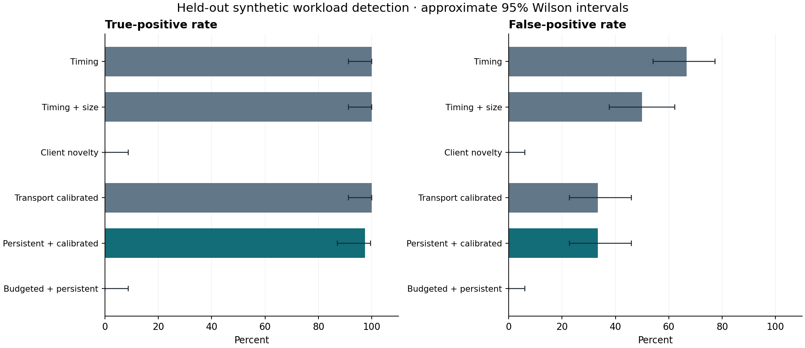
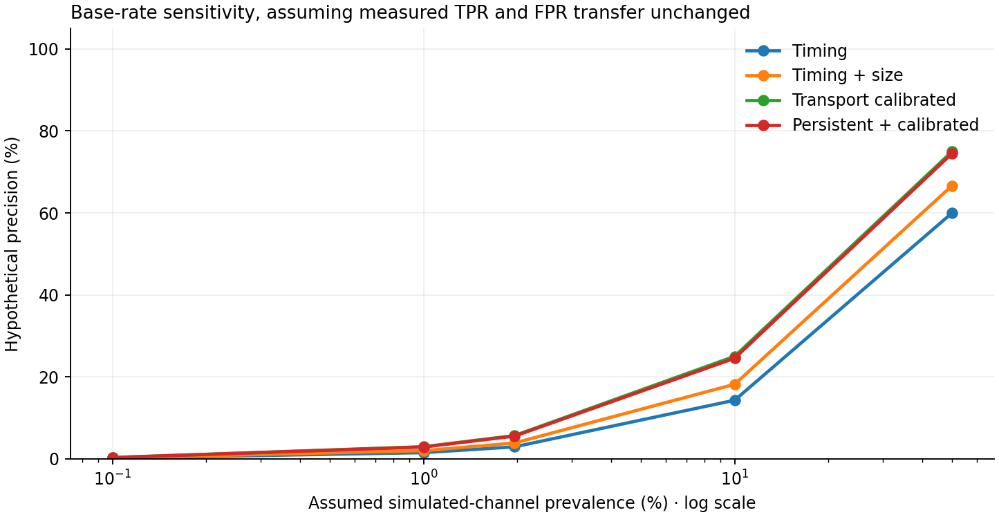

What do simple network rules
actually distinguish?
A reproducible pilot comparing synthetic channel traffic with benign periodic HTTP/S clients.
What this experiment establishes
The pooled timing-plus-size baseline detected 40/40 scored positive runs and alerted on 30/60 scored benign runs (FPR 50.0%). Its label is a synthetic workload, not an attack verdict.
Transport calibration alone detected 40/40 scored positives and produced 20/60 false alerts on the same held-out set, with 100.0% scoring coverage.
On the same held-out runs, the persistent, transport-calibrated rule detected 39/40 scored positives and alerted on 20/60 scored benign runs. Positive coverage was 100.0%; benign coverage was 100.0%.
The later-gate/persistence variant removed no additional false alerts versus calibration alone. It detected 39 versus 40 positives; median detection delay was 1.10 versus 0.50 seconds.
Remaining false alerts include health_check. Periodicity and size variation alone still overlap with benign behavior.
The 10.0% development-FPR budget produced held-out recall 0.0% and FPR 0.0%. It emitted no alerts: precision is undefined, and zero alerts do not demonstrate useful detection.
Fresh seeds test new draws from the same generator. These findings support investigation of periodic traffic, not operational malware-detection claims.
Evidence and provenance
Actual loopback HTTP/S traffic was observed by an active transparent TCP forwarder. These are socket-level stream observations, not passive packet captures. Byte counts include TCP payload and TLS records, not TCP/IP headers. No PCAP was captured for this experiment.
Rules were selected on development runs and frozen before held-out traffic collection. Each completed run is one fixed-duration client–destination window. The first qualifying prefix creates at most one alert.
Configured minimum for timing-rule prefixes: 6 completed connections. Refinement policies, when present, carry their own gates and persistence settings in the frozen model. These can affect TPR, FPR, coverage, and delay. Client novelty does not use this gate.
Observation backend: tcp_stream_proxy ·
Failed runs excluded: 0
Held-out results
| Detector | Transport | Scored / total | TP / FN | FP / TN | TPR | FPR | Precision | Median detection (s) |
|---|---|---|---|---|---|---|---|---|
| Timing | HTTP | 50/50 | 20 / 0 | 20 / 10 | 100.0% | 66.7% | 50.0% | 0.50 |
| Timing | HTTPS | 50/50 | 20 / 0 | 20 / 10 | 100.0% | 66.7% | 50.0% | 0.50 |
| Timing + size | HTTP | 50/50 | 20 / 0 | 10 / 20 | 100.0% | 33.3% | 66.7% | 0.50 |
| Timing + size | HTTPS | 50/50 | 20 / 0 | 20 / 10 | 100.0% | 66.7% | 50.0% | 0.50 |
| Client novelty | HTTP | 50/50 | 0 / 20 | 0 / 30 | 0.0% | 0.0% | N/A | N/A |
| Client novelty | HTTPS | 50/50 | 0 / 20 | 0 / 30 | 0.0% | 0.0% | N/A | N/A |
| Transport calibrated | HTTP | 50/50 | 20 / 0 | 10 / 20 | 100.0% | 33.3% | 66.7% | 0.50 |
| Transport calibrated | HTTPS | 50/50 | 20 / 0 | 10 / 20 | 100.0% | 33.3% | 66.7% | 0.50 |
| Persistent + calibrated | HTTP | 50/50 | 20 / 0 | 10 / 20 | 100.0% | 33.3% | 66.7% | 1.10 |
| Persistent + calibrated | HTTPS | 50/50 | 19 / 1 | 10 / 20 | 95.0% | 33.3% | 65.5% | 1.10 |
| Budgeted + persistent | HTTP | 50/50 | 0 / 20 | 0 / 30 | 0.0% | 0.0% | N/A | N/A |
| Budgeted + persistent | HTTPS | 50/50 | 0 / 20 | 0 / 30 | 0.0% | 0.0% | N/A | N/A |
N/A means the feature or denominator is unavailable—not zero. Coverage must be considered alongside detection rates.


Paired changes versus pooled timing + size
| Candidate | Jointly scored | Benign alerts removed | Benign alerts added | Positive detections lost | Positive detections gained |
|---|---|---|---|---|---|
| Transport calibrated | 100 | 10 | 0 | 0 | 0 |
| Persistent + calibrated | 100 | 10 | 0 | 1 | 0 |
| Budgeted + persistent | 100 | 30 | 0 | 40 | 0 |
All differences use the same held-out runs. Unavailable pairs are excluded; review coverage.
Uncertainty and alert burden
| Detector · both transports | TPR · 95% interval | FPR · 95% interval | False alerts / benign client-hour | Precision at assumed 1:50 |
|---|---|---|---|---|
| Timing | 91.2–100.0% | 54.1–77.3% | 800.00 | 2.9% |
| Timing + size | 91.2–100.0% | 37.7–62.3% | 600.00 | 3.8% |
| Client novelty | 0.0–8.8% | 0.0–6.0% | 0.00 | N/A |
| Transport calibrated | 91.2–100.0% | 22.7–45.9% | 400.00 | 5.7% |
| Persistent + calibrated | 87.1–99.6% | 22.7–45.9% | 400.00 | 5.5% |
| Budgeted + persistent | 0.0–8.8% | 0.0–6.0% | 0.00 | N/A |
Intervals are approximate Wilson intervals at the run level; shared generator and environment limit independence. The accelerated pilot's client-hour rates are normalized measurements, not forecasts of production alert volume. A zero observed FPR can still have a wide interval.
Base-rate sensitivity
Change the assumed ratio below. This calculation holds the measured TPR/FPR constant and is a hypothetical scenario, not a claim about a real network.
Precision = TPR × prevalence / [TPR × prevalence + FPR × (1 − prevalence)].
Where the combined rule succeeds or fails
| Detector | Workload | Transport | Ground-truth class | Scored / total | Flagged fraction |
|---|---|---|---|---|---|
| Timing + size | channel_regular | HTTP | simulated channel | 10/10 | 100.0% |
| Timing + size | channel_variable | HTTP | simulated channel | 10/10 | 100.0% |
| Timing + size | health_check | HTTP | benign | 10/10 | 100.0% |
| Timing + size | monitor_heartbeat | HTTP | benign | 10/10 | 0.0% |
| Timing + size | update_check | HTTP | benign | 10/10 | 0.0% |
| Timing + size | channel_regular | HTTPS | simulated channel | 10/10 | 100.0% |
| Timing + size | channel_variable | HTTPS | simulated channel | 10/10 | 100.0% |
| Timing + size | health_check | HTTPS | benign | 10/10 | 100.0% |
| Timing + size | monitor_heartbeat | HTTPS | benign | 10/10 | 100.0% |
| Timing + size | update_check | HTTPS | benign | 10/10 | 0.0% |
| Persistent + calibrated | channel_regular | HTTP | simulated channel | 10/10 | 100.0% |
| Persistent + calibrated | channel_variable | HTTP | simulated channel | 10/10 | 100.0% |
| Persistent + calibrated | health_check | HTTP | benign | 10/10 | 100.0% |
| Persistent + calibrated | monitor_heartbeat | HTTP | benign | 10/10 | 0.0% |
| Persistent + calibrated | update_check | HTTP | benign | 10/10 | 0.0% |
| Persistent + calibrated | channel_regular | HTTPS | simulated channel | 10/10 | 100.0% |
| Persistent + calibrated | channel_variable | HTTPS | simulated channel | 10/10 | 90.0% |
| Persistent + calibrated | health_check | HTTPS | benign | 10/10 | 100.0% |
| Persistent + calibrated | monitor_heartbeat | HTTPS | benign | 10/10 | 0.0% |
| Persistent + calibrated | update_check | HTTPS | benign | 10/10 | 0.0% |
| Budgeted + persistent | channel_regular | HTTP | simulated channel | 10/10 | 0.0% |
| Budgeted + persistent | channel_variable | HTTP | simulated channel | 10/10 | 0.0% |
| Budgeted + persistent | health_check | HTTP | benign | 10/10 | 0.0% |
| Budgeted + persistent | monitor_heartbeat | HTTP | benign | 10/10 | 0.0% |
| Budgeted + persistent | update_check | HTTP | benign | 10/10 | 0.0% |
| Budgeted + persistent | channel_regular | HTTPS | simulated channel | 10/10 | 0.0% |
| Budgeted + persistent | channel_variable | HTTPS | simulated channel | 10/10 | 0.0% |
| Budgeted + persistent | health_check | HTTPS | benign | 10/10 | 0.0% |
| Budgeted + persistent | monitor_heartbeat | HTTPS | benign | 10/10 | 0.0% |
| Budgeted + persistent | update_check | HTTPS | benign | 10/10 | 0.0% |
For simulated channels, flagged fraction is recall. For benign workloads, it is a false-positive rate. The same held-out benign set supports comparison of the two simulated timing conditions.
Frozen model
Timing and request-size variation are the only numeric predictors. IP addresses, ports, payload markers, profile names, and absolute timestamps are excluded from the prediction rules.
Show exact model and development run IDs
{
"schema_version": 1,
"training_run_ids": [
"rac9f9e8e8f1c6900",
"r4fe916111e9e0751",
"r515c228ecf2cc361",
"r33c2410594dffe53",
"rcf53ca1d2b87c4fe",
"r8512fa15799f3c2f",
"r8c8df0f750e1a223",
"r40bbc3b0ce2105de",
"rf51543a9ca083514",
"re4a054328a95628b",
"r195f7e05371725eb",
"r6a2e06a7c9eaa59e",
"rcc0ce30f675dcf27",
"r4d5d029494d6451f",
"r591dcd8d948b604f",
"reaa9fdffc62b2f76",
"rb393a5055e84bf7d",
"r0c2da2cf04ad8d83",
"r780f13d495eecc92",
"rab1ef79f6794bb2b",
"r428aa1e6b3a7bb8a",
"rcb17221dbf537ca6",
"rc64ec79c88377220",
"rb49483702904a128",
"r6b89d45cc3f54aa5",
"r20b3f291c68ea85c",
"r3aeddceeaa419dc8",
"r0251e6aa5b291d35",
"r10a66f5451f4106b",
"r4225ce44ff999684",
"rff8bf03349597b07",
"r1258ee0f71785a3b",
"r512403a74a72d992",
"r72583bbd8b5eadfe",
"r4b87473230329f53",
"r24148829724f8612",
"re8ee7b2775de5fce",
"r9d840786f5b5a13c",
"r8c65077fc36d91b0",
"r2e8370c714fbf2df",
"r183ead0f304d80e8",
"r8432b4b49dd9a011",
"ra5840a2e89dc9192",
"ref045225a3789cb1",
"r971b1d31d538a07f",
"r44367bc6ac9ed1b4",
"r78a162e9a2d7a87d",
"rf46ecc765465f451",
"rf14eb204b78066b9",
"r5b822ddf182391e3",
"r87d285d333dc3a91",
"r81b8aca7fbf4e84b",
"r26b505ad451f733b",
"rbc5e10b8c27c6453",
"r63a1a14e71f83d33",
"r40b87a38e70ffb99",
"r268367a6ba7cb73b",
"reb46d337760ddbce",
"r0d48cdf45572149c",
"rafaf29f3a07527a9"
],
"training_split": "development",
"selection": "maximize development balanced accuracy; ties prefer lower FPR; never-alert fallback",
"evaluation_policy": "first qualifying causal prefix; at most one alert per run",
"numeric_feature_allowlist": [
"interval_cv",
"request_size_cv"
],
"grid": {
"interval_cv_max": [
0.0,
0.03,
0.06,
0.1,
0.2,
0.35,
0.5,
0.8,
1.2
],
"request_size_cv_max": [
0.0,
0.01,
0.03,
0.06,
0.1,
0.2,
0.4,
0.8
]
},
"rules": {
"timing": {
"kind": "timing",
"interval_cv_max": 0.35,
"development_balanced_accuracy": 0.6666666666666667,
"development_fpr": 0.6666666666666666
},
"timing_and_size": {
"kind": "timing_and_size",
"interval_cv_max": 0.35,
"request_size_cv_max": 0.06,
"development_balanced_accuracy": 0.75,
"development_fpr": 0.5
},
"client_novelty": {
"kind": "client_novelty",
"known_benign": {
"ja3": [
"dbb158bbf02cb040164d288c9b1d8492"
],
"user_agent": [
"BeaconLab-ResearchClient/1.0"
]
}
},
"transport_calibrated": {
"kind": "by_transport",
"transport_rules": {
"http": {
"kind": "timing_and_size",
"interval_cv_max": 0.35,
"request_size_cv_max": 0.06,
"min_events": 6,
"consecutive_prefixes": 1,
"selection_status": "selected",
"development": {
"tp": 12,
"fn": 0,
"fp": 6,
"tn": 12,
"tpr": 1.0,
"fpr": 0.3333333333333333,
"coverage": 1.0,
"fpr_ci95": [
0.1627877475083369,
0.5625053270405489
]
},
"max_development_fpr": null
},
"https": {
"kind": "timing_and_size",
"interval_cv_max": 0.35,
"request_size_cv_max": 0.01,
"min_events": 6,
"consecutive_prefixes": 1,
"selection_status": "selected",
"development": {
"tp": 12,
"fn": 0,
"fp": 6,
"tn": 12,
"tpr": 1.0,
"fpr": 0.3333333333333333,
"coverage": 1.0,
"fpr_ci95": [
0.1627877475083369,
0.5625053270405489
]
},
"max_development_fpr": null
}
}
},
"persistent_calibrated": {
"kind": "by_transport",
"transport_rules": {
"http": {
"kind": "timing_and_size",
"interval_cv_max": 0.35,
"request_size_cv_max": 0.06,
"min_events": 10,
"consecutive_prefixes": 3,
"selection_status": "selected",
"development": {
"tp": 12,
"fn": 0,
"fp": 6,
"tn": 12,
"tpr": 1.0,
"fpr": 0.3333333333333333,
"coverage": 1.0,
"fpr_ci95": [
0.1627877475083369,
0.5625053270405489
]
},
"max_development_fpr": null
},
"https": {
"kind": "timing_and_size",
"interval_cv_max": 0.35,
"request_size_cv_max": 0.01,
"min_events": 10,
"consecutive_prefixes": 3,
"selection_status": "selected",
"development": {
"tp": 12,
"fn": 0,
"fp": 6,
"tn": 12,
"tpr": 1.0,
"fpr": 0.3333333333333333,
"coverage": 1.0,
"fpr_ci95": [
0.1627877475083369,
0.5625053270405489
]
},
"max_development_fpr": null
}
}
},
"budgeted_persistent": {
"kind": "by_transport",
"transport_rules": {
"http": {
"kind": "timing_and_size",
"interval_cv_max": -1.0,
"request_size_cv_max": -1.0,
"min_events": 10,
"consecutive_prefixes": 3,
"selection_status": "no_useful_development_rule",
"development": {
"tp": 0,
"fn": 12,
"fp": 0,
"tn": 18,
"tpr": 0.0,
"fpr": 0.0,
"coverage": 1.0,
"fpr_ci95": [
0.0,
0.17587922364665765
]
},
"max_development_fpr": 0.1
},
"https": {
"kind": "timing_and_size",
"interval_cv_max": -1.0,
"request_size_cv_max": -1.0,
"min_events": 10,
"consecutive_prefixes": 3,
"selection_status": "no_useful_development_rule",
"development": {
"tp": 0,
"fn": 12,
"fp": 0,
"tn": 18,
"tpr": 0.0,
"fpr": 0.0,
"coverage": 1.0,
"fpr_ci95": [
0.0,
0.17587922364665765
]
},
"max_development_fpr": 0.1
}
}
}
},
"refinement": {
"min_events": 10,
"consecutive_prefixes": 3,
"max_development_fpr": 0.1,
"primary_comparison": "timing_and_size versus persistent_calibrated on the same held-out runs",
"budget_interpretation": "Empirical development cap, not a guaranteed held-out or operational FPR",
"feature_scope": "Same two CV features; transport selects thresholds; no profile/label/seed at prediction",
"ablation": "transport_calibrated isolates transport-specific fitting; persistent_calibrated also changes the event gate"
},
"frozen_utc": "2026-11-10T05:45:13.962517+00:00"
}The client-novelty baseline compares HTTP User-Agent or HTTPS JA3 against values seen in benign development traffic. An alert means an unseen observable signal relative to that reference population, not an attacker. Legitimate client-stack changes or incomplete benign training coverage can produce alerts. All generated clients deliberately use the same library and User-Agent. A shared fingerprint is not evidence of maliciousness.
Limits and next checks
- Labels describe synthetic workload purpose, not observed malicious intent.
- Reported rates are conditional on detector availability; coverage is reported separately.
- Wilson intervals are approximate per-run binomial intervals, not guarantees of real-network generalization.
- Prevalence-adjusted precision is hypothetical and assumes measured TPR/FPR transfer unchanged.
- Benign-hour alert rates from accelerated pilot traffic are not production alert-volume forecasts.
- The first qualifying prefix emits at most one alert per run; thresholds remain frozen.
- Original baselines use the configured minimum-event gate. Refinement policies, when present, carry explicit gates and persistence; client novelty does not use them.
- Client novelty means an observed UA/JA3 was absent from benign development signals; it can flag legitimate population changes and does not establish maliciousness.
- Repeated config/seed inputs are deterministic only with fixed generator code/runtime; measured traffic, fitted rules, and results may vary between live executions.
- Transport calibration and persistence were chosen after reviewing the earlier pilot, then evaluated on fresh runs. This remains the same synthetic generator family.
- The false-positive budget constrains development observations only. Report held-out misses and uncertainty even when no alerts occur.
- Consecutive cumulative prefixes overlap; persistence is a debounce policy, not independent statistical confirmation.
Collect longer runs, include independently sourced benign traffic, and validate the packet-capture/Zeek path before making operational claims. TLS changes the available evidence; a performance drop is not a predetermined outcome.